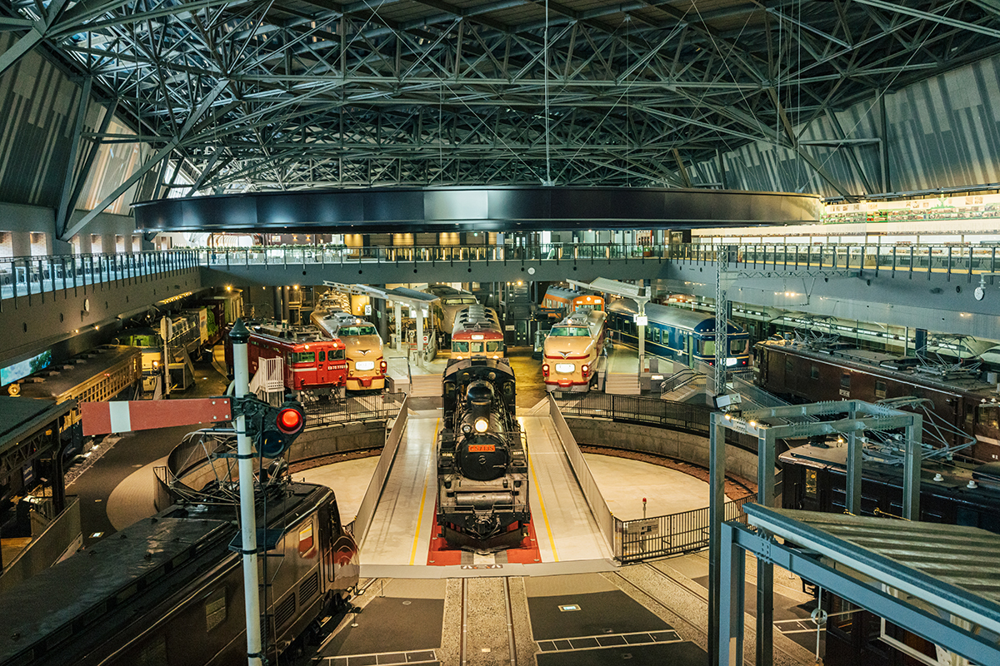
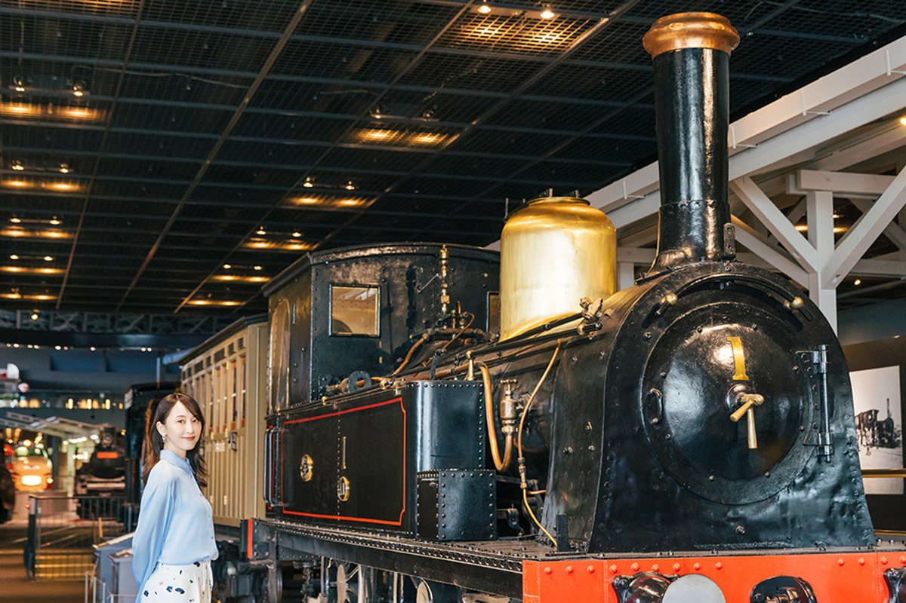
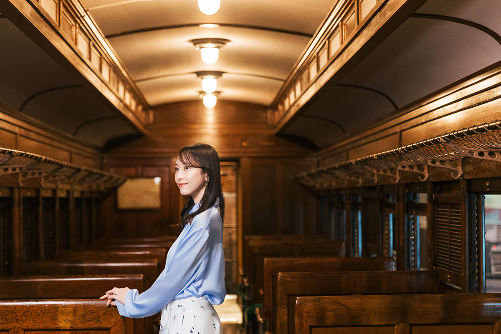
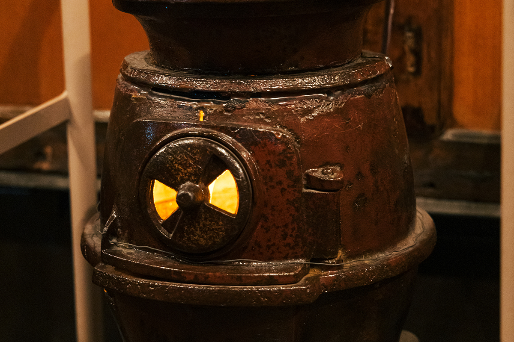

Префектура Сайтама · Омия · музей
Железнодорожный музей в Омии: 42 настоящих вагона и путешествие, которое начинается с посадки в поезд

Актриса, которая давно и всерьёз любит поезда, говорит о местных железных дорогах так: «Сама поездка уже и есть путешествие». В 2025 году она прошлась по Железнодорожному музею в Омии, и разговор быстро ушёл от экспонатов к тому, ради чего вообще садятся в поезд.
Музей
От паровоза №1 до синкансэнов
Железнодорожный музей стоит в Омии, одном из районов города Сайтама. Здесь собраны документы по истории и технике железных дорог, а в залах стоят 42 настоящих вагона и локомотива: паровозы, электрички, синкансэны.

Актриса снималась во многих передачах о поездах, и музей ей явно по душе. «Интересно узнавать историю железных дорог, а ещё здесь много вагонов, которых я раньше не видела. Смотреть можно бесконечно. И старые вагоны такие ностальгические, очень красивые».
Посреди разговора она замечает синкансэн серии 200, вагон 222, и почти бегом направляется к нему. «Какой милый! Я выросла в префектуре Айти, поэтому зелёные синкансэны, которые ходят на северо-востоке, для меня в диковинку. Обожаю их». С синкансэнов, по её словам, и началась любовь к поездам: на выставке старых составов она увидела, что у каждой модели своё «лицо», и прониклась мыслями людей, которые их создавали.
Вагон
Оха 31 и печка в салоне
В деревянном салоне вагона Оха 31 актриса задерживается надолго. Такие вагоны начали строить в 1927 году: прочный стальной кузов пришёл на смену прежним деревянным. Последние годы своей службы этот вагон провёл в «печном поезде» одной из местных дорог в снежном краю.

«Печной поезд» ходит зимой с 1930 года. Пассажиры греются у пузатой чугунной печки на угле и болтают друг с другом, а состав, который курсировал в 2025 году, уже четвёртый по счёту. Актрисе такая поездка запомнилась тем, что все вместе жарили на печке сушёного кальмара.

Дорога
Чем хороши местные линии
Сама актриса скромничает: любит синкансэны, а в местных линиях, по её словам, разбирается не очень. Но по работе ей довелось проехать по множеству небольших дорог. Обед на таких съёмках всегда один: соба на станции. Старшие коллеги, тоже любители поездов, научили её есть станционную собу везде, где бываешь, и тогда у каждого места останется своё воспоминание. Бульон и начинка в разных краях разные, так что это отдельное удовольствие от поездки.
Больше всего ей нравятся линии, где кроме самой дороги есть ещё какое-то занятие: летом пиво в вагоне, зимой одэн. Тогда, говорит она, поездка сама становится воспоминанием о путешествии. То же с туристическими поездами: в них понимаешь, что путь может радовать не меньше, чем цель.
Ещё одна её страсть: дизайн поездов и вокзалов. «В окраске и логотипах полно маленьких шуток, которые с первого взгляда не заметишь, поэтому за вагонами интересно наблюдать». Поезда, отделанные материалами и цветами своих мест, поднимают дорожное настроение, пока едешь. «Встретить такой местный дизайн тоже одна из радостей местных линий».
Железнодорожный музей
- Адрес
- префектура Сайтама, Сайтама, район Омия, Онари-тё, 3-47
- Телефон
- +81 48-651-0088
- Часы работы
- 10:00–17:00 (вход до 16:30)
- Выходные
- вторник
- Цены / Вход
- взрослые 1600 иен
Фото: Майко Фукуи.